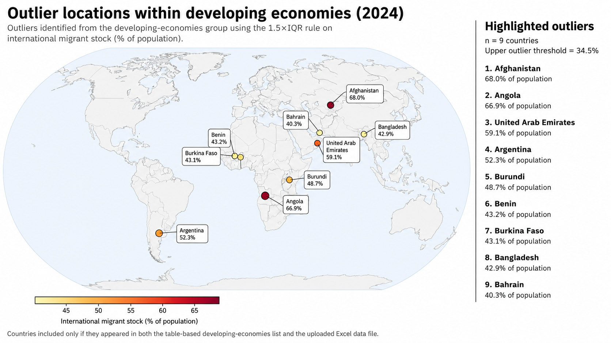

Abstract
Countries are often labeled as developed using income-based thresholds such as GNI per capita. However, income alone may not fully capture the broader social conditions associated with development. In this project, we examine whether social indicators such as fertility, infant mortality, migrant share, aging, and service-sector employment align with conventional GNI-based classifications.
Using World Bank World Development Indicators and country groupings from the UN World Economic Situation and Prospects framework, we compare patterns across countries to show that development is multidimensional and that broader social indicators may reveal important differences that income-based definitions overlook.
Fertility and Development
Fertility decline is one of the most widely observed demographic patterns associated with development. Lower fertility often emerges alongside urbanization, women's education, rising living costs, and expanded access to healthcare and family planning.


Developed economies generally cluster at lower fertility levels, while many developing economies remain higher. Some middle-income countries have already undergone major fertility declines, while some wealthy economies do not fit a simple demographic pattern.
Migrant Share by Development Group
This violin plot compares international migrant stock as a share of total population across developed economies, economies in transition, and developing economies. Migration can reflect labor-market attraction, economic opportunity, political stability, and global integration.

Developed economies generally show the highest migrant shares and the greatest variation. Economies in transition tend to fall in the middle, while most developing economies remain lower. Extreme outliers show that high migrant share alone does not automatically imply broad-based development.
Geographic Distribution of Outliers
This map examines the geographic distribution of outlier countries within the developing economies group in 2024, focusing on historical and geographic factors that may help explain unusually high international migrant stock.
Using the 1.5xIQR rule, nine outlier countries were identified: Afghanistan, Angola, the United Arab Emirates, Argentina, Burundi, Benin, Burkina Faso, Bangladesh, and Bahrain.

The locations suggest that migration patterns are closely connected to each country's historical and geographic context, including foreign labor systems, conflict, displacement, regional mobility, and porous borders.
Interactive Infant Mortality Visualizations
These dashboards expand the analysis by examining how infant mortality changes across countries, sex categories, and time. They allow users to explore long-term health transition, compare regional development patterns, and observe how sex-based mortality inequality behaves as countries modernize.
Infant Mortality and Health Transition Explorer
This dashboard combines a global infant mortality map with a health transition scatter plot. Users can filter by country, region, year, and sex category to examine how infant mortality rates decline over time.
If the dashboard loads slowly, wait a few moments for the hosted app to wake up.
Male-Female Infant Mortality Gap
This visualization isolates the male-female infant mortality gap across countries and over time. Positive values indicate higher male infant mortality, while negative values indicate higher female infant mortality.
Most countries experienced substantial declines in infant mortality between 1960 and 2024.
The pace of improvement differs significantly across regions and development stages.
Sex-based disparities can remain visible even as healthcare systems modernize.
Outro
This project demonstrates that development is multidimensional and cannot be fully understood through income-based classifications alone. By comparing fertility, infant mortality, migrant share, and other demographic indicators across countries and development groups, we observe that social outcomes often reveal important differences that traditional economic measures may overlook.
Together, the visualizations suggest that development should be viewed as a broader social process shaped by healthcare access, demographic transition, migration patterns, and long-term structural change.
References and Data Sources
- World Bank. World Development Indicators. Accessed 2026.
- United Nations. World Economic Situation and Prospects 2025. United Nations Publications, 2025.
- Natural Earth. Admin 0 Countries Dataset. Public geographic dataset used for choropleth regional mapping.
- Gapminder Foundation. Visualizing Global Development Trends Through Animated Scatterplots.